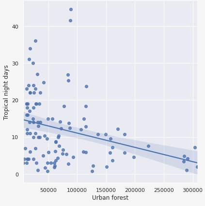
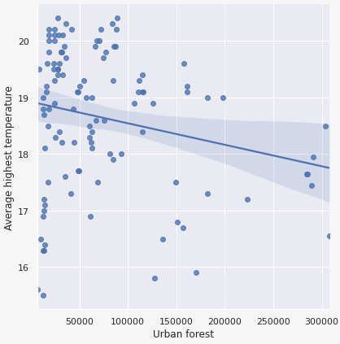
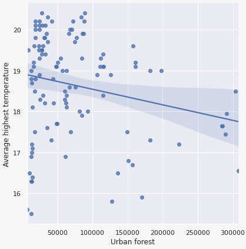

서론
'산림복지' 개념,
산림복지 시설 현황과 관련한 시각화
'도시숲(생활권 도시숲)'의 개념,
수치로 확인하는 도시숲 확충의 간접적, 직접접 이익
'도시숲(생활권 도시숲)'의 개념,
수치로 확인하는 도시숲 확충의 간접적, 직접접 이익
01
서론
산림복지
좁은 의미
산림을 기반으로 한 서비스
(휴양, 치유, 교육 등)
넓은 의미
조림, 숲 가꾸기를 통한
공익적 편익 증진
02
좁은의미의 산림복지
유형별 산림복지 시설
지역별 산림복지 시설
03

04
설문지
산림여가 활동 설문조사
(한국산림복지진흥원, 1만명 대상)
사용빈도
이동거리
만족도
06
설문지
상관관계
설문조사 결론
✔ 산림복지 시설까지 이동거리가 멀면
사용빈도가 적은 경우가 많다.
✔ 산림복지 시설 사용빈도가 높을수록
만족도가 높은 경우가 많다.
→ 생활권 주변 산림복지 시설의 확충!
07
도시숲, 생활권 도시숲이란 ?
08
09
도시숲, 생활권 도시숲분포 현황(2019)
10
11
넓은의미의 산림복지
12
도시숲 확충의 간접적 이익
1) 기온 완화
2) 미세먼지 흡수/흡착
3) 산소 방출/이산화탄소 흡수
4) 소음 감소
13
상관관계
열대야일수·도시숲면적 | 폭염일수·도시숲면적 | 평균최고기온·도시숲면적
 

✓ 열대야일수(-0.3), 폭염일수(-0.1), 평균 최고기온(-0.22) 모두 음의 상관관계를 가진다.
✓ 앞으로 도시숲을 더 많이 늘린다면, 더 확실한 효과를 얻을 것으로 보인다.
14
결론
1. 유형별, 지역별 산림복지 시설이 고르게 분포되어야 한다.
2. 도시 생활권 내에서 사용할 수 있는 산림복지 시설의
양적, 질적 향상이 필요하다.
15
출처 및 정보제공
- 한국산림복지진흥원
- 산림청 _휴양복지
- 기상청 _열대야, 폭염일수, 평균최고기온
- e-나라지표 _전국 도시숲 현황
- 산림 빅데이터 거래소
· 산림 휴양복지 통계 설문정보
· 생활권 산림면적에 따른 여름철 평균기온
 GitHub
GitHub
https://github.com/JeongYunLee/Forest_Welfare.git
16
감사합니다 :)
이정윤, 신주영
17